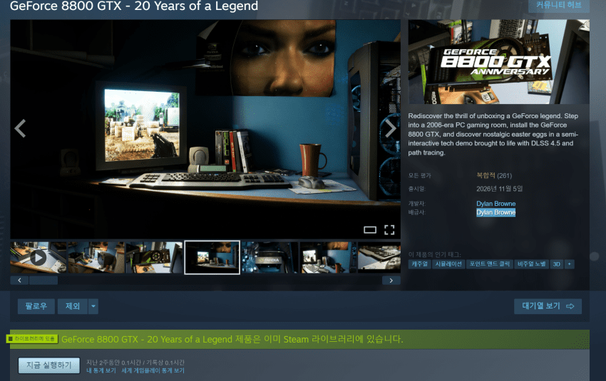
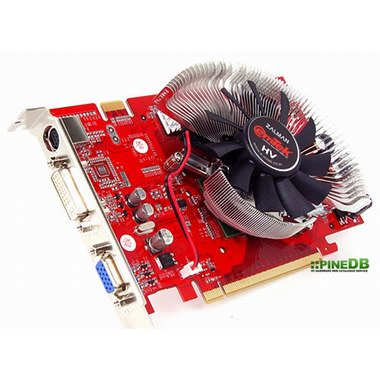
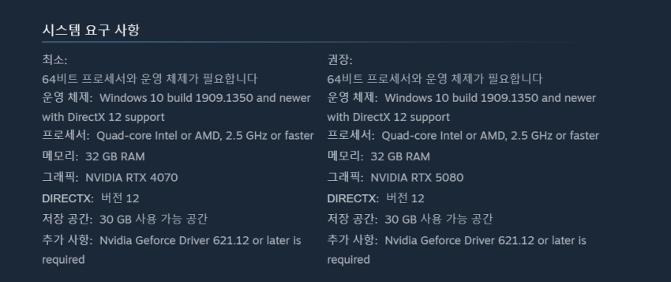
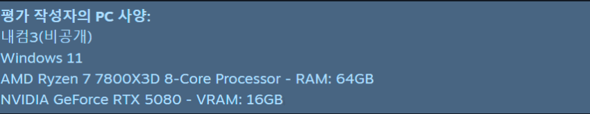
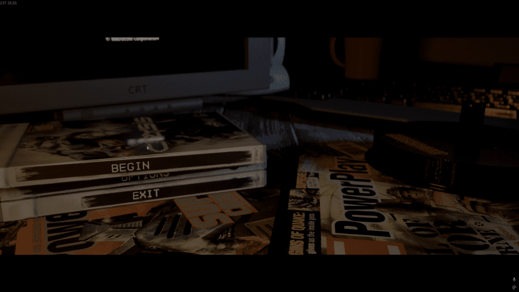
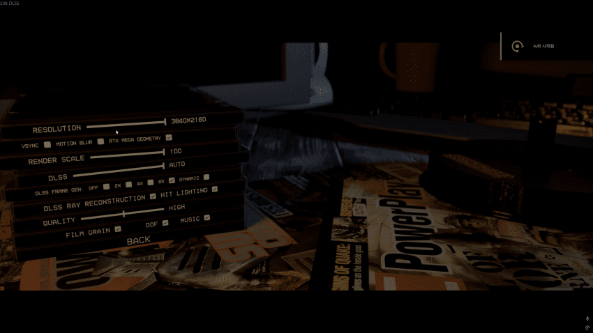
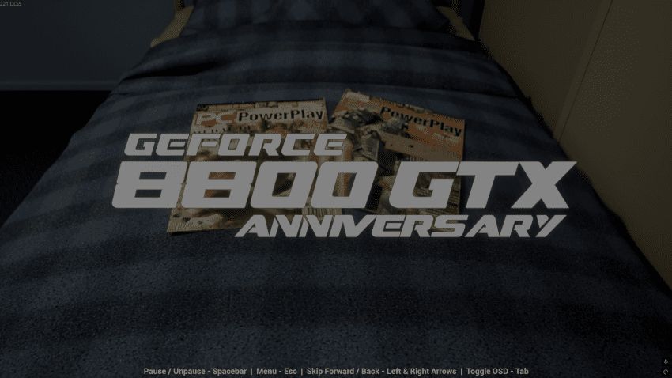
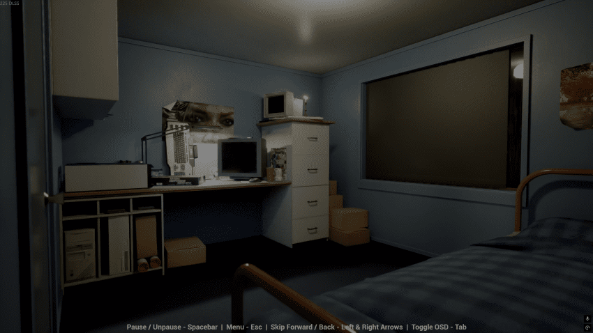
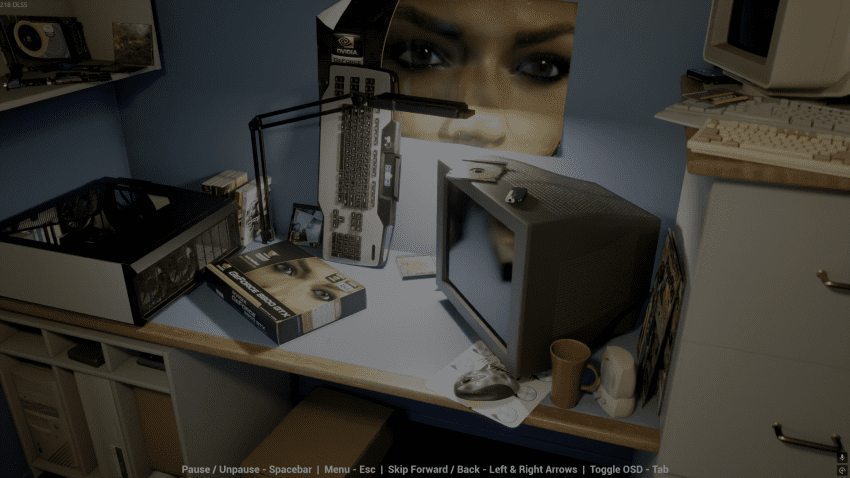
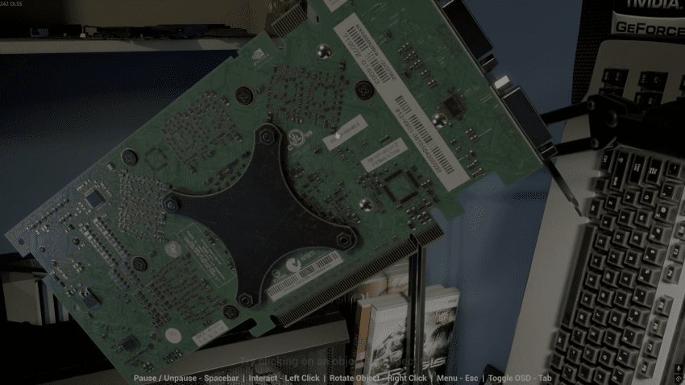

옛날에 지포스 8800GTX가 20년 전 2006년 11월 8일에 출시었는데. 바로 올해 20주년을 기념하여 언리얼 엔진 아티스트로 알려진 딜런 브라운(Dylan Browne)이 엔비디아와 협력해 ‘GeForce 8800 GTX – 20 Years of a Legend’을 데모를 스팀에 출시했우!
[외부 동영상 원본 열기]

현재 언리얼 엔진 아티스트로 일하고 있다는 '딜런 브라운'이우~ 존나 많이 먹을거 같이 생겼우~
당시 킹갓엠페러에 속하는 8천따리 세대 8800 GTX를 처음 접했을 당시 게이머들이 느꼈던 설렘을 다시 추억해보자는 생각으로 만들었다우~

난 이때 이엠텍 HV 지포스 6600 gt 256mb 잘만 썼었는데. 쒸발~ 저 당시 글카 쿨러 디자인은 지금 생각해보면 존나 디자인이 조악했우~
2006년이면 엄마 아가궁전에서 존재조차 안하던 대가리에 개씹 피도 안마른 징빙이들도 있었겠지?


참고로 이 데모 게임?이라고 하기엔 뭐하고 그냥 말그대로 데모이우~ 생생한 리얼함을 살린다고, 최적화는 아주 개좆박은게 보여우~ 권장이 무려 RTX 5080이우~
참고로 징빙이는 5080이라 괜찮우~ 그지 중붕이들은 최소사양 RTX 4070 턱걸이도 못하니. 아직도 1060쓰는 징빙이들은 그냥 컷이여 컷컷~
암튼 드가보자구~

드가면 크라이시스 pc판 패키지 케이스로 메뉴얼을 구성했우~ 역시 크라이시스1은 당시 혁명적이였지.
한때 밈으로 북괴 새끼들 목소리 리믹스밖에 생각안나도 일단, 출시하기 전엔 유투브 좆만하던 시절에 뭔지도 몰랐고, 그나마 한국에서 동영상 플랫폼인 앰엔케스트에서 첨봤었는데. 꿈의 게임이라는 인식이 많았우...

시작전에 옵션 들어가면 이렇게 나오우... 존나 별거 없우 어차피 사양안되서 못돌릴 놈들은 실행도 안되고 첨 겜 시작하면 렌더링 존나 길게하우..



겜 들어가면 이렇게 개백수 징빙이 방으로 추정되는 방과 밖에는 천둥번개가 내리고 있지. 당시 8800GTX를 영접한 겜붕이 새끼들의 마음을 담아낸 데모 답게 번개치면서 화면이 전환되우

이 쒸발 6800? 나보다 좋은거 썼누 ㅡㅡ
2000년 초에 나온 RIVA TNT노ㅋㅋ
컴터에 넣고 실행조져부려~
암튼 가장 중요한 목적은 20년 전 지포스 8800GTX를 접하던 그때를 회상하는 것이 목적이기에 드디어 집에 킹갓엠페러 전설의 지포스 8800GTX를 영접하게 되었우!
그럼 막 웅장한것도 없고 걍 크라이시스1 돌아가는거 보여주고 끝이우 ㅇㅇ 존나 빠른건 내가 스킵했우~
이게 다인데... 이 사람은 이런거 왜 만든거우?
댓글
수집 당시 댓글 50개
징빙이 · 11.08 22:39:17
· WATAROO · 11.08 22:39:36
· ㅇㅇ · 11.11 09:22:13
김덕현 · 11.09 03:14:10
ㅇㅇ · 11.09 11:56:04
땨뗘(봇) · 11.11 07:30:08
말랑보추 · 11.11 07:30:11
· 크리스티아노 · 11.11 07:32:19
ㅇㅇ · 11.11 07:31:32
· ㅇ · 11.11 07:33:35
크리스티아노 · 11.11 07:32:07
· 말랑보추 · 11.11 07:32:39
ㅇㅇ · 11.11 07:41:59
· 샴또샴또 · 11.11 08:09:10
· ㅇㅇ · 11.11 10:04:21
노인을 잔인하게
ㅇㅇ · 11.11 07:42:19
· ㅇㅇ · 11.11 08:01:09
느니르코 · 11.11 07:42:46
ㅇㅇ · 11.11 07:46:00
ㅇㅇ · 11.11 07:58:48
ㅇㅇ · 11.11 07:59:39
키노시타카즈야 · 11.11 08:08:24
· WATAROO · 11.11 08:11:28
· 키노시타카즈야 · 11.11 08:13:55
· WATAROO · 11.11 08:16:25
hers8456 · 11.11 08:09:40
ㅇㅇ · 11.11 08:13:37
· ㅇㅇ · 11.11 08:14:53
· ㅇㅇ · 11.11 15:37:48
ㅇㅇ · 11.11 08:18:36
dd · 11.11 08:20:05
엘데의짐 · 11.11 08:21:25
ㅇㅇ · 11.11 08:46:34
ㅇㅇ · 11.11 09:01:42
· ㅇㅇ · 11.11 10:12:47
ㅇㅇ · 11.11 09:42:20
ㅇㅇ · 11.11 09:57:18
ㅇㅇ · 11.11 11:00:51
ㅇㅇ · 11.11 11:19:44
ㅇㅇ · 11.11 12:01:05
파란까마기 · 11.11 12:14:12
ㅇㅇ · 11.11 12:34:29
ㅇㅇ · 11.11 12:38:17
ㅇㅇ · 11.11 12:43:52
ㅇㅇ · 11.11 12:47:22
ㅇㅇ · 11.11 12:54:43
04T · 11.11 14:12:43
ㅇㅇ · 11.11 14:23:55
ㅇㅇ · 11.11 14:52:59
ㄹㄹ · 11.11 14:57:43